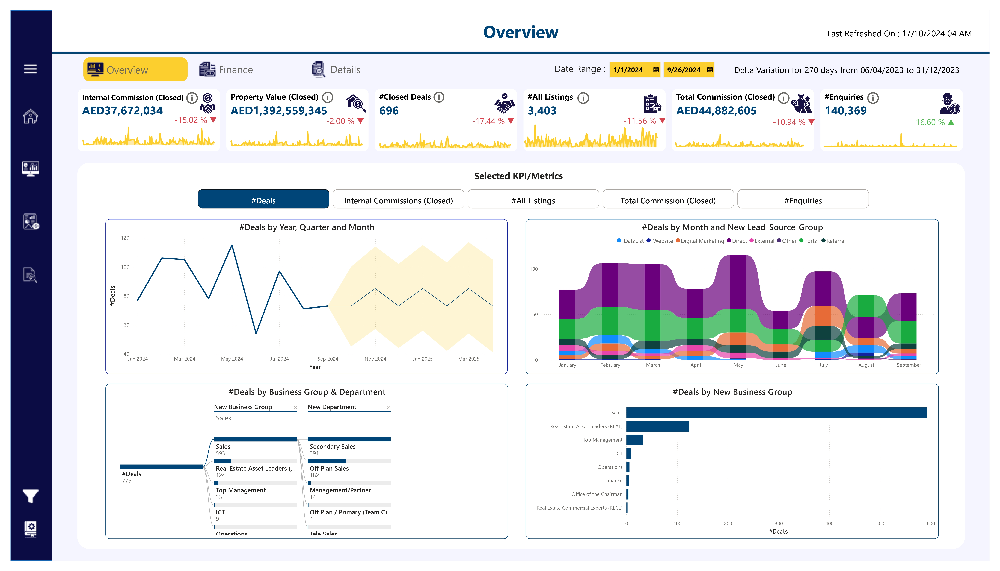

🡠Real Estate Analytics – Power BI Dashboard Project
This Power BI reporting system offers a streamlined experience for exploring real estate business insights across finance, operations, marketing, and executive summaries. Each page is designed to serve a unique purpose while keeping usability and performance top of mind.
📌 1. Landing Page – Navigation Hub
The landing page acts as a centralized navigation panel, built using button-linked visuals. This acts as a launchpad for various functional reports tailored to stakeholder needs.
Benefits:
- Easy-to-use interface
- Quick access to functional reports
- Time-saving through reduced navigation guesswork
📊 2. Executive Overview – Performance Summary
This dashboard presents a high-level snapshot of KPIs to help business leaders track:
- Internal commissions
- Property values
- Closed deals
- Lead enquiries
Users can filter data across time, business units, departments, and lead sources, with dynamic visuals enabling fast trend analysis.
💰 3. Finance Dashboard – Revenue & Profitability Insights
Designed for finance teams, this report provides visibility into:
- Salesforce Revenue
- Profit Margins (Gross & Net)
- Expense Breakdown
- Cash Flow Movements
- Lead Conversion Funnel
Visual tools such as trend charts and sales funnels offer deep insight into revenue generation and cost management.

🢠4. Business Performance Summary
This report focuses on key business metrics, including:
- Revenue generated
- Lead analysis
- Property performance
It allows stakeholders to quickly identify high-performing areas and track deal progression across time.

📘 5. KPI Dictionary – Definitions & Usage Guide
The KPI Dictionary ensures data literacy and consistency across teams by offering:
- Clear KPI definitions
- Business meanings
- Metric calculation methods
- Department & category tagging